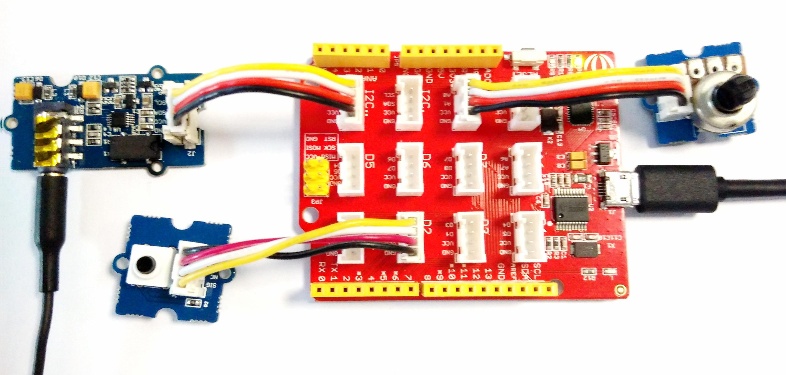
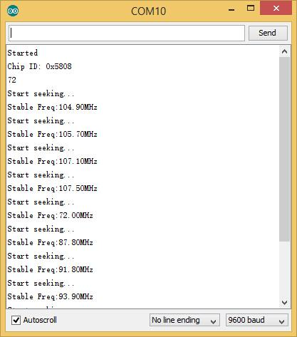

Grove - I2C FM Receiver
Grove - I2C FM Receiver is a wideband FM receiver module, this module is based on RDA5807M. The RDA5807M series is the newest generation single-chip broadcast FM stereo radio tuner with fully integrated synthesizer. The RDA5807M series has a powerful low-IF digital audio processor.
The Grove - I2C FM Receiver has a headset jack, so it can connect to earphones or audio.
Features
- Grove interface
- Support worldwide frequency band: 50 - 115MHz
- Support RDS/RBDS
- Lower power consumption
- Headsets interface
- Digital auto gain control
- Input voltage: 3.3V - 5V
Usage
We can change channel by Grove - Button and adjust volume by Grove - Rotary
Hardware Installation
Part lists：Seeeduino Lotus,Grove - I2C FM Receiver,Grove - Button 、Grove - Rotary、earphone

Software Part
- 1) Download the code I2C FM Receiver;
- 2) Unzip it into the libraries file of Arduino IDE by the path: ..\arduino-1.0.5\libraries.
- 3) Open the code directly by the path: File -> Example -> I2C_FM_Receiver
- 4) Upload the code. Note that you should select the correct board type and COM port.
You can see Center Frequent:

Resources
Version Tracker
| Revision
|
Descriptions
|
Release Date
|
| Grove - I2C FM Receiver v1.0
|
Initial public release
|
|
| Grove - I2C FM Receiver v1.1
|
- Fixed bug - DFM for J3
|
Dec 2, 2011
|
Copyright (c) 2008-2016 Seeed Development Limited (
www.seeedstudio.com /
www.seeed.cc)
This static html page was created from http://www.seeedstudio.com/wiki